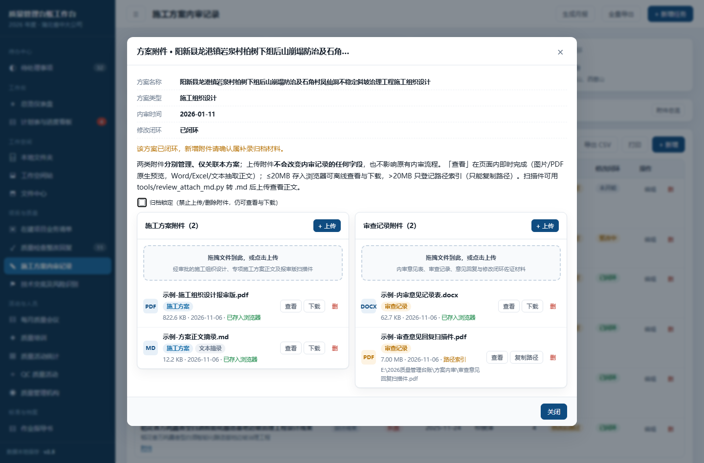
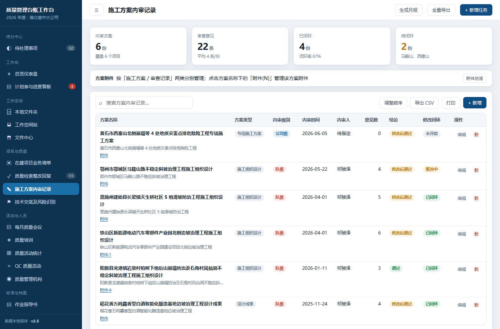
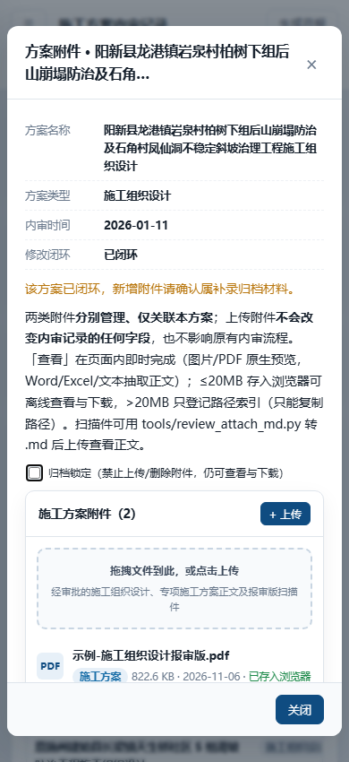

施工方案内审附件 · 独立成果存档
质量管理台账工作台 | 版本 v2.5 | 成果日期 2026-11-06 | 存档范围：仅本轮 v2.5
本地存档，勿对外发布。本档案含真实项目名称与内审方案名称，仅存于本地工作目录；未上传云端、未部署公网链接。过程性记录另见 .workbuddy/memory/2026-11-06.md，本档案可脱离会话与日志独立阅读、核对和重建。
新增功能探针
116项
PASS=116 / FAIL=0
实体快照
29文件
1,743,477 B · SHA256 全验
一、成果概览与需求对照
| 原需求 | 交付实现 | 结论 |
|---|
| 方案名称列每个方案条目含附件上传与下载 | 「方案名称」列 cell-sub 区新增「附件(N)」链接，点击打开该方案专属弹窗；已有 6 条与后续新增方案同时覆盖 | 已满足 |
| 含已有及新增方案 | 按 reviewId（方案 id）绑定，不按名称；方案改名不失联，uid("r") 新增方案自动覆盖，无需特判 | 已满足 |
| 两类分别管理、标识、展示 | 施工方案 / 审查记录 两栏分治，各有独立上传入口与列表；每条附件带类别徽标、空栏给缺件提示 | 已满足 |
| 与对应方案准确绑定、不同方案相互独立 | 独立数组 DB().reviewAttachments，按 reviewId + kind 双维过滤；探针验证跨方案零串扰 | 已满足 |
| 清晰的上传、查看、下载入口 | 弹窗内「+ 上传」按钮＋拖拽区；每条附件「查看 / 下载（或复制路径）」；页面顶部另有「附件总览」 | 已满足 |
| 展示附件名称与类别 | 列表显示名称、类别徽标、大小、上传日期、存放方式；.md 摘录另标「文本摘录」；查看弹窗补显示所属方案 | 已满足 |
| 操作结果明确反馈 | 上传逐条＋汇总提示；查看／下载／删除对记录不存在、方案已删、路径索引、原件丢失、解析失败、只读、锁定均明确提示，不静默失败 | 已满足 |
| 保持现有内审记录功能不受影响 | 零侵入：不写 reviews 任何字段、不触发 beforeSave、不改 KPI 四卡／CSV 列／导入器映射／列定义 | 已满足 |
二、变更点 · 实现位置 · 影响范围 · 兼容与校验结论
| 变更点 | 实现位置 | 影响范围 | 兼容与校验结论 |
|---|
| 新增附件能力分片 | src/reviewattach.js（29,219 B），build.py 注册 @@REVIEWATTACH@@ | 纯新增模块，挂在 @@INSPATTACH@@ 之后 | 懒初始化 DB().reviewAttachments；不改 SEED，旧库首次打开自动得到空数组；导出对象 window.ReviewAttach |
| 方案名称列内入口 | src/modules.js：reviews 的 cols[title].fmt 追加链接；schema 增 afterRender | 仅该表格的渲染与事件绑定 | 零列宽增加；1440 视口表格溢出保持 0（原有 80px 余量未占用）；表格内链接用 host 查找，顶部按钮用全局查找，互不干扰 |
| 页面顶部总览 | modules.js review 页 extraHead 末尾「方案附件」卡片 | 页面头部新增一张说明卡 | 原有 4 张 KPI 卡构成不变；总览按方案列两类数量、缺件提示、孤儿附件与跳转 |
| 两栏分治弹窗与查看链路 | reviewattach.js：open / openViewer / upload / download / remove | 新增弹窗，不改动任何既有弹窗 | 弹窗单独 maxWidth:920px；<860px 自动单列；PDF 预览的 blob URL 在 onClose 释放 |
| 样式 | src/style.css 追加 .ra-grid/.ra-link/.ra-view | 仅新增类名 | 未覆盖任何既有选择器；移动端单列后 scrollWidth == innerWidth |
| 构建与版本 | build.py、src/template.html（v2.5） | 最终单文件产物 | 构建后 @@ 占位符残留 0 处；全部 CSS/JS 内联，无 CDN、无外部字体、无图表库 |
| markitdown 离线工具 | tools/review_attach_md.py（5,696 B） | 独立 Python 脚本，不内嵌 HTML | 工作台零新增运行时依赖；已冒烟跑通；空文本跳过、单文件失败不中断 |
三、设计决策（grill-me 逐项确认，无遗留「看情况」）
| # | 决策分支 | 结论 | 理由 / 依据 |
|---|
| 1 | 查看语义 | 页内即时完成：图片 / PDF 浏览器原生预览；doc/docx/pdf/xls/xlsx/txt/md 用工作台自带零依赖 Parse.parse 抽正文；markitdown 作离线补充 | markitdown v0.1.9 是 Python 包，无法内嵌单文件 HTML；工作台本身已有零依赖浏览器端解析器 |
| 1a | 摘录归属（子决策） | 转出的 .md 作为普通附件归对应类别、列表标「文本摘录」，不新增第三类、不新增数据字段 | 代码事实决断：EXT.md:"text" 已在解析白名单 |
| 2 | 入口位置 | 方案名称列内「附件(N)」链接 ＋ 页面顶部「附件总览」 | 实测该表 1440 视口溢出 0、有 80px 余量，但仍选零列宽增加，贴合需求点名的「方案名称列」 |
| 2a | 绑定键（子决策） | 一律按 reviewId 绑定，不按方案名称 | 代码事实决断：改名不失联；uid("r") 新增方案自动覆盖 |
| 3 | 分类展示 | 两栏分治 ＋ 每条类别徽标 ＋ 空栏缺件提示 ＋ 按 closure 软提示 ＋ 总览缺件提示 | 「分别管理」边界最直观；沿用 v2.4 已验证的分栏样式 |
| 4 | 隔离边界 | 零侵入全面沿用 v2.4 口径；不改 KPI／CSV／导入器／beforeSave／reviews 任何字段 | 附加 KPI 或 CSV 列会稀释既有口径、影响已有对表流程 |
| 5 | 离线脚本形态 | 单文件 Python 脚本，用法写在 docstring，不另建说明文档 | 不新增数据字段与文件名映射逻辑；转出 .md 走普通附件通道 |
| 6 | 沿用的 v2.4 口径 | 20MB 阈值、readonly＋按方案归档锁定、同类同名二次确认替换、孤儿附件整批清理、只进 JSON 备份、不按状态硬拦截 | 与上一轮检查单附件保持体验一致，减少重复决策 |
四、数据结构字典
4.1 附件记录 DB().reviewAttachments[]
| 字段 | 类型 / 取值 | 说明 |
|---|
id | string | 附件记录主键，新增时生成 |
reviewId | string | 关联 reviews.id，按 id 而非方案名称绑定；方案改名不失联 |
kind | plan / record | 施工方案 / 审查记录；validKind() 仅接受这两个值 |
name / size / type / date | string / number / string / string | 原始文件名、字节数、MIME 类型、上传日期 |
mode | idb / path | 二进制入库 / 仅登记本地路径索引 |
key | string（ra_ 前缀） | mode=idb 时对应文件中心同一 IndexedDB 的键；与检查单附件 ia_ 前缀隔离 |
path | string | mode=path 时的完整本地路径，只能复制路径、不能直接下载 |
4.2 常量与开关
| 项 | 值 | 说明 |
|---|
ATT_LIMIT | 20*1024*1024（20MB） | 附件单独放宽；文件中心仍为 5MB。超限或文件库不可用降级为路径索引 |
分类定义 KINDS | plan / record | 施工方案＝经审批的施工组织设计、专项方案正文及报审扫描件；审查记录＝内审意见表、审查记录、意见回复与修改闭环佐证 |
DB().ui.reviewAttachLock | 对象：方案 id → bool | 按方案「归档锁定」；锁定后禁增删，仍可查看/下载；随 JSON 备份保存 |
schema.readonly | bool | 唯一全局权限口径；只读时隐藏上传/删除入口、禁写，下载与查看始终可用 |
| 正文截断 | 30,000 字 | Parse.parse 抽出正文超长时截断，避免弹窗卡顿 |
4.3 关联的 6 条既有内审方案（真实名称原样保留）
| id | 方案名称 | 类型 | 修改闭环 |
|---|
| r1 | 阳新县龙港镇岩泉村柏树下组后山崩塌防治及石角村凤仙洞不稳定斜坡治理工程施工组织设计 | 施工组织设计 | 已闭环 |
| r2 | 恩施州建始县长梁镇天生桥社区 5 组滑坡防治工程施工组织设计 | 施工组织设计 | 已闭环 |
| r3 | 铁山区新能源电动汽车零部件产业园北侧边坡治理工程施工组织设计 | 施工组织设计 | 已闭环 |
| r4 | 鄂州市鄂城区马鞍山路不稳定斜坡治理工程施工组织设计 | 施工组织设计 | 整改中 |
| r5 | 黄石市西塞山北侧崩塌等 4 处地质灾害点排危除险工程专项施工方案 | 专项施工方案 | 未开始 |
| r6 | 稻花香万吨馫香型白酒智能化酿造基地边坡治理工程设计成果 | 设计成果 | 已闭环 |
说明：附件记录不写入上述任何一条记录的字段；方案删除后附件保留，由总览标为「孤儿附件」并提供整批清理。
五、功能矩阵与操作反馈
| 操作 | 入口 | 成功反馈 | 异常 / 边界反馈 |
|---|
| 上传 | 两栏各自「+ 上传」按钮 ＋ 拖拽上传区 | 逐条「已上传：X」＋汇总「上传完成：成功 N 个，失败/取消 M 个」 | 方案不存在/已删、分类无效、只读、归档锁定、无名文件跳过、同类同名二次确认、>20MB 降级「已登记路径索引」、文件库不可用降级、落库失败回滚记录与二进制 |
| 查看 | 列表「查看」 | 打开查看弹窗，显示名称、类别、所属方案、大小、上传日期、正文/预览，并带「下载原件」 | 记录不存在、方案已删、路径索引（复制路径）、文件库未加载、原件丢失、无文本层明确提示并指向离线脚本、解析失败、预览链接生成失败 |
| 下载 | 列表「下载」；路径索引显示「复制路径」 | 「已开始下载：X」 | 记录不存在、方案已删、路径索引（明确说明不能下载并复制路径）、文件库未加载、下载失败 |
| 删除 | 列表「删」＋二次确认 | 「已删除附件：X」 | 只读、归档锁定、记录不存在、本地存储写入异常 |
| 归档锁定 | 弹窗内复选框（按方案） | 锁定状态随 JSON 备份保存 | 只读台账不能修改锁定；锁定状态保存失败提示 |
| 孤儿清理 | 「附件总览」顶部，确认框列出文件名 | 「已清理 N 个」，记录与对应 IndexedDB 二进制一并删除 | 无孤儿时提示、只读时禁止、本地存储写入异常 |
| 状态软提示 | 弹窗顶部 | 按 closure 显示提示（如未开始／整改中／已闭环补录提醒） | 不硬拦截：补传历史扫描件、闭环后补录归档不受阻 |
六、隔离边界验收（保持现有内审记录功能不受影响）
| 验收项 | 结论 | 验证方式 |
|---|
reviews 任何业务字段 | 零写入 | probe30：上传／查看／下载／删除／锁定／清理全流程结束后，6 条既有方案对象逐字一致 |
beforeSave 校验规则 | 不触发 | 附件走独立数组与独立落库路径，不调用台账编辑保存 |
| 内审页 KPI 四卡 | 构成不变 | probe30 断言 KPI 卡片数量与口径未改；新增的是头部说明卡片 |
| 表格列定义与列宽 | 不变 | 仍 8 列；入口嵌在既有 title 列的 cell-sub 内，未加列；1440 视口溢出保持 0 |
| CSV / 全量导出列 | 不变 | 导出走固定字段白名单，不含新数组 |
| 导入器字段映射 | 不变 | 未新增任何映射规则 |
| JSON 备份 | 自动包含 | backupJSON 用 JSON.stringify(DB())，新数组随备份保存；probe30 已断言 |
| 产品 HTML 预置附件 | 0 处 | 截图中的「示例-」附件仅注入视觉验证页，已 grep 核查产品 HTML 不含任何预置附件 |
| 跨方案隔离 | 零串扰 | 按 reviewId + kind 双维过滤；probe30 验证不同方案、不同类别互不影响 |
七、验证与全量回归
7.1 新增功能探针 probe30（116 项 / PASS=116 / FAIL=0）
覆盖：两类隔离、按 id 绑定（方案改名 ＋ 新增方案）、类别徽标与文本摘录标签、查看六条路径（正文 / 摘录 / 图片 / PDF / 无文本层 / 解析失败）、上传与下载异常反馈、readonly 与归档锁定、同类同名替换、孤儿清理、全流程后 6 条方案逐字一致、KPI／列定义／字段数不变、JSON 备份含附件数组。
7.2 全量回归 10 套 · 453 项断言全过
| 探针 | 断言数 | 覆盖范围 | 结果 |
|---|
| probe19 | 25 | 文件驱动导入链路：统计 / 项目 / 改名 / 删除 | 全过 |
| probe20 | 27 | 对账 / 撤销 / 冲突裁决 / 忽略 | 全过 |
| probe21 | 15 | 导入链路补充边界 | 全过 |
| probe23 | 57 | 整改状态机 5 态 / beforeSave 闭环校验 / 打印件 / 仪表盘 | 全过 |
| probe25 | 42 | 源位置列三态 / 备份携带 srcLoc | 全过 |
| probe26 | 41 | 全表排序模式：拖拽 / 首尾循环 / 落盘 / 取消还原 | 全过 |
| probe27 | 35 | 18 条真实问题 / 「未提供」显示态 / 机构人员表上下移 | 全过 |
| probe28 | 5 | 「复制路径」同步写入系统剪贴板 | 全过 |
| probe29 | 90 | v2.4 检查单附件：两类分治 / 归档锁定 / 孤儿清理 / 打印清单 | 全过 |
| probe30 | 116 | 本次 v2.5 方案内审附件 | 全过 |
| 合计 | 453 | FAIL / EXC = 0 | 全过 |
7.3 视觉验证

1440 视口 · 两栏分治弹窗

1440 视口 · 方案名称列内入口

390 视口 · 移动端单列
1440 与 390 视口均验证 scrollWidth == innerWidth，无横向溢出；两栏与单列布局无文字重叠、无按钮裁切。截图中的示例附件仅用于视觉验证，产品 HTML 不预置任何附件。
八、文件清单、校验和与复现步骤
8.1 独立实体快照
目录：archive/2026-11-06_v2.5/manifest.json （29 个文件 / 1,743,477 B，逐文件 SHA256 与源文件比对 全部一致）
包含：最终产物 质量管理台账工作台.html、build.py、src/ 全部 19 个分片、tools/review_attach_md.py、probe30.js＋mkprobe30.py、截图页生成脚本与 CDP 工具、3 张验证截图、manifest.json。不含 _tmp/ 下的 20,587 个浏览器缓存文件。
8.2 关键文件 SHA256
| 文件 | 字节 | SHA256 |
|---|
| 质量管理台账工作台.html | 624,387 | 0b7c445a94d1146763c9f6ba4a932fcb6c334fe3392e0e7c0d73b49b97725607 |
| src/reviewattach.js | 29,219 | 2104d859f2d88c76ff46e62ca24f89653057298513a3c5d952e23e9be2e6a686 |
| src/modules.js | 64,649 | 816bbc73478edf4adca893b9f026501af486b54f8a10decae543d5510223ae82 |
| tools/review_attach_md.py | 5,696 | f14aeb36a83c7e956668a1f8e0ee92b8a2eff0ef70f787feb029de0f5ca34246 |
| build.py | 1,591 | e952161c2985501297b7dfe3037e5b64a81abc1b332f9d60f2f52f22f1925f06 |
8.3 复现步骤
- 重建产物（仅需 Python，零第三方依赖）：
cd "E:\workbuddy 缓存\质量管理工作台搭建"
python build.py
按 @@XXX@@ 占位符拼接 src/ 分片，输出根目录单文件 质量管理台账工作台.html。
- 打开工作台：双击产物 HTML，进入「施工方案内审记录」页 → 点方案名称下的「附件(N)」或顶部「附件总览」。
- 扫描件补文本（需已安装 markitdown v0.1.9，Python 侧离线运行）：
python tools/review_attach_md.py --dir "D:/方案扫描件" --out "D:/摘录输出"
生成的 .md 作为普通附件上传到对应类别，即可在「查看」里读正文。
- 跑功能探针：
python _tmp/mkprobe30.py
# 再用 headless Edge 打开 _tmp/probe30.html，从 DOM 提取 <pre id="probe"> 结果
msedge --headless --disable-gpu --no-sandbox --dump-dom --virtual-time-budget=35000 \
--window-size=1440,950 "file:///.../_tmp/probe30.html"
- 核对快照完整性：以
manifest.json 中每个 sha256 与本地文件重新计算比对。
8.4 环境备忘（复现时易踩的坑）
- headless Edge 的
--virtual-time-budget 会快进定时器，导致真实 File.arrayBuffer() 的 IO Promise 偶发未 resolve；探针里用同步 arrayBuffer 桩消除竞态，产品代码走浏览器原生实现。
- 表格溢出断言必须带
--window-size=1440,950，否则默认 800 视口会误报约 292px 溢出。
- 同一命令连续启动 3 个以上 msedge 偶发 SIGTERM，拆成单条命令逐个跑。
file:// URL 只需把空格编码为 %20，中文目录不要二次编码。